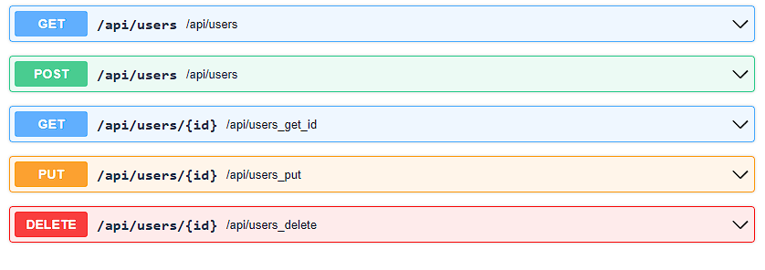
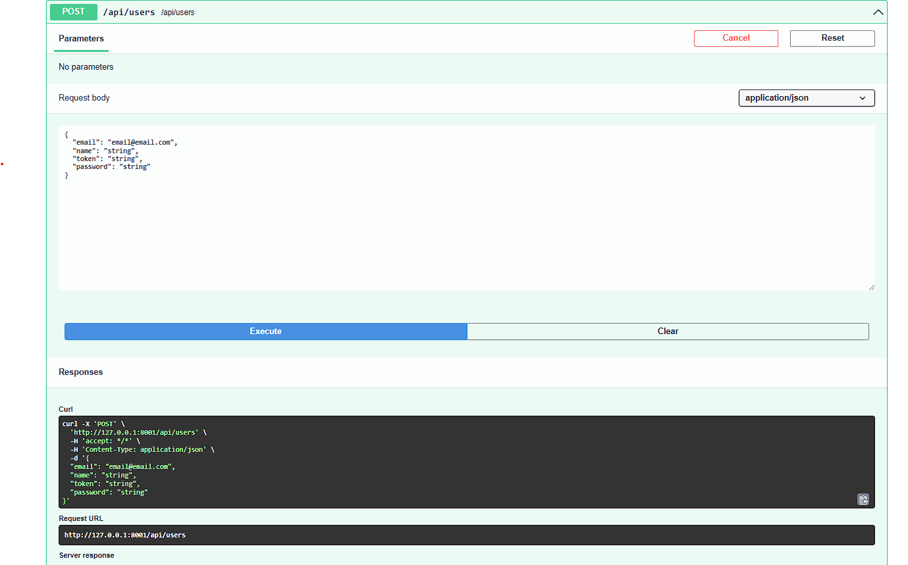
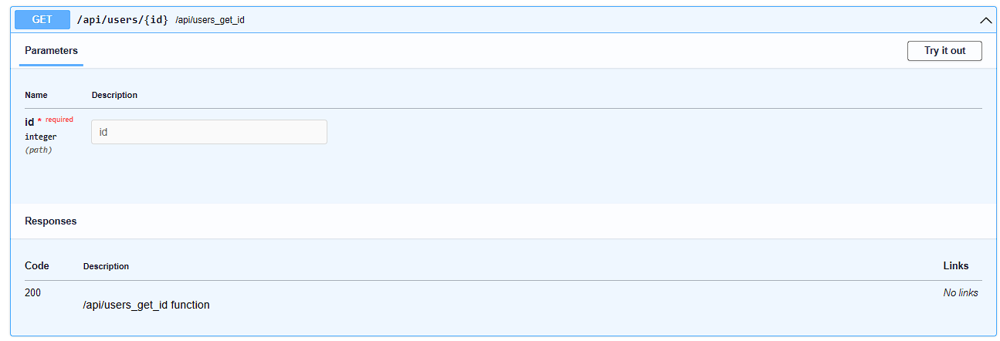
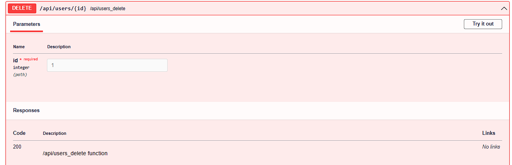

⚡ REST API CRUD Generator
At Lila, we have a simple way to generate CRUDs with automatic documentation, allowing you to create your REST API efficiently.
Thanks to the combination of SQLAlchemy and Pydantic models, it is possible to perform data validations and execute structured queries for API generation.
Additionally, you can integrate custom middlewares to validate tokens, manage sessions, or process requests. With just a few lines of code, you can generate a fully documented REST API CRUD.
If you haven't already, enable migrations when you start the server
.
By default it uses SQLite, it will create a database file lila.sqlite
in
the
project root.
lila-migrations
from lila.core.request import Request
from lila.core.responses import JSONResponse
from lila.core.routing import Router
from pydantic import EmailStr, BaseModel
from app.middlewares.middlewares import validate_token, check_token, check_session,login_required
from app.connections import connection # Database connection with SQLAlchemy
from app.models.user import User # SQLAlchemy 'User' model
router = Router()# Initialize the router instance to manage API routes.
# Pydantic model for validations when creating or modifying a user.
class UserModel(BaseModel):
email: EmailStr
name: str
token: str
password: str
# Middleware definitions for CRUD operations
middlewares_user = {
"get": [],
"post": [],
"get_id": [],
"put": [],
"delete": [check_session, check_token],# Example middlewares for web session 'check_session' and jwt 'check_token'
"html":[login_required] # If generate_html is True in router.rest_crud_generate
}
# Automatically generate CRUD with validations and configurations
router.rest_crud_generate(
router=router,
connection=connection, # Database connection
model_sql=User, # SQLAlchemy model
model_pydantic=UserModel, # Pydantic model
select=["name", "email", "id", "created_at", "active"], # Fields to select in queries
delete_logic=True, # Enables logic delete (sets 'active = 0' instead of deleting records)
active=True, # Automatically filters active records ('active = 1')
middlewares=middlewares_user, # Custom middlewares for each CRUD action
)
You can create your own middlewares and pass them as a list to customize
security and validations for each rest_crud_generate
operation.
To generate the documentation, always remember to
run it after the routes router.swagger_ui()
and
router.openapi_json()
Function Parameters for rest_crud_generate
Below are the parameters that this function accepts to generate CRUD automatically:
def rest_crud_generate(
self,
connection,
model_sql,
model_pydantic: Type[BaseModel],
select: Optional[List[str]] = None,
columns: Optional[List[str]] = None,
active: bool = False,
delete_logic: bool = False,
middlewares: dict = None,
jsonresponse_prefix:str='',#Return with prefix list o dict 'data' first key
user_id_session:bool| str=False #Example 'user id' to validate in query with where 'user_id'= id session_user
) : Automatic Documentation
Below is an example of the generated documentation for the
rest_crud_generate
function:
Go to http://127.0.0.1:8000/docs,
or as configured in your .env file (by
HOST and
PORT).
GET - Retrieve all users

GET - Output of all users

POST - Create new user

GET_ID - Retrieve a specific user

PUT - Update user

DELETE - Delete user

In this example, we did it with 'users', but you can apply it however you want according
to your
logic ,'products','stores',etc. Even modifying the core in core/routing.py.
For both the 'POST' or 'PUT' method function, If the framework detects that you pass data in the request body such as: 'password' , it will automatically encode it with argon2 to make it secure. Body example :
{
"email":"example@example.com",
"name":"name",
"password":"my_password_secret"
}
Then, if you pass 'token' or 'hash', with the helper
function
generate_token_value
, it automatically generates a token, which will be saved in the database as the 'token'
column
with the value generated by the function
.
Body example :
{
"email":"example@example.com",
"name":"name",
"password":"my_password_secret",
"token":""
}
With 'created_at' or 'created_date' , it will save the date and time of the moment, as long as that field exists in the database table. Body example :
{
"email":"example@example.com",
"name":"name",
"password":"my_password_secret",
"token":"",
"created_at":""
}
For the 'PUT', 'GET' (get_id) or 'DELETE' methods
It is optional according to the logic of each REST API, you can pass it as
query string
, user_id
or id_user,
an example would be GET, PUT or DELETE as a method
to the url http://127.0.0.1:8000/api/products/1?user_id=20
Where it validates that the product ID '1' exists but also that it belongs to the user ID '20' .
🆕 Parameters for HTML CRUD Generation
In addition to generating the REST API CRUD, rest_crud_generate now
accepts three new parameters to
create a fully functional HTML CRUD directly:
- generate_html: bool = True - Automatically generates an HTML CRUD page using a responsive Lila datatable. Useful to generate the interface only during development.
- rewrite_template: bool = False - If True, overwrites existing templates.
- url_html: str = None - Optional. Specify the output URL for the HTML. If not provided, the HTML can be copied and used in any route.
This feature allows you to create CRUD pages with create, update, delete, pagination, validations and uses the same REST CRUD API as backend. It is ideal for quickly creating multiple CRUDs in HTML and backend for your application: with around 30 lines of code, you get a fully functional HTML CRUD ready for minor edits -or ready to use as is.
You can pass DEBUG from from app.config import DEBUG to generate_html so the HTML is only generated in development.
If you set generate_html=False, the HTML is not generated
automatically and can be used as you like.